Thông tin chung về Du học Hungary
Tùy theo khả năng tài chính và sở thích mà bạn có thể chọn thuê cho mình
một căn hộ riêng, một studio
hoặc một phòng riêng trong một căn hộ nhiều phòng ngủ (shared
apartment).
Có 2 hình thức thuê nhà chính:
Nếu bạn là sinh viên du học theo học bổng Hiệp định của chính phủ thì sẽ được hỗ trợ một vị trí trong ký túc xá với giá 40 000 HUF (theo chính sách hiện hành) và được sử dụng điện nước thoải mái. Bạn có thể lựa chọn ở phòng 4 người và phòng 2 người khi ở ký túc xá. Nếu bạn là sinh viên du học tự túc, chi phí thuê phòng ký túc xá sẽ có sự chênh lệch đôi chút về trường mà bạn theo học.
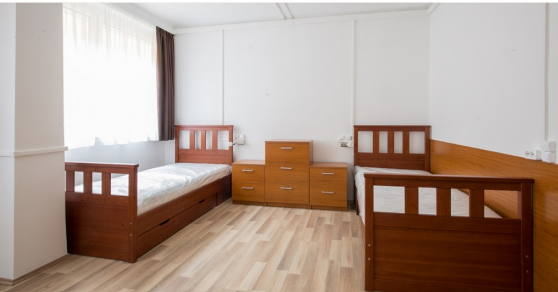
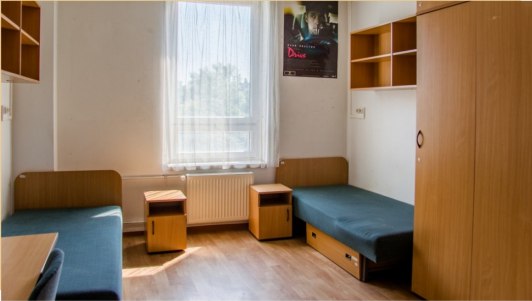
Thuê căn hộ lớn nhiều phòng ngủ với các không gian sinh hoạt chung để có thể ở ghép (collocation), mỗi người có một phòng ngủ riêng, mọi người dùng chung nhà tắm, phòng khách, nhà vệ sinh và nhà bếp.
Thuê studioThuê riêng 1 phòng có nhà bếp phòng ngủ, nhà vệ sinh tích hựp (studio).
Thuê homestayThuê 1 phòng trong nhà của người bản địa (homestay), nghĩa là có phòng riêng cho mình, còn những phòng khác dùng chung với chủ nhà. Đây là một hình thức hợp lý cho các bạn sinh viên muốn học hỏi về văn hóa Hungary.
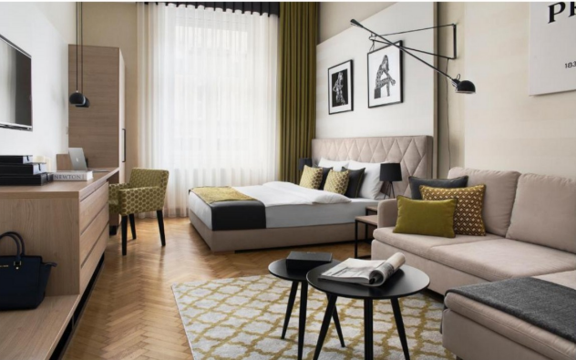
Thuê nhà tư nhân ngoài tiền thuê nhà các bạn phải trả các chi phí hàng tháng bao gồm điện, nước, sưởi, internet và chi phí chung. Tùy theo nhu cầu thuê phòng riêng/studio/nguyên căn mà chi phí sẽ cao hơn ở ký túc xá.
Ưu điểm và nhược điểmKhi quyết định thuê phòng ở ngoài thì chắc chắn chi phí sẽ cao hơn so với việc ở ký túc xá, nhưng bù lại bạn sẽ có một không gian riêng tư, yên tĩnh, phù hợp với nhu cầu và sở thích của bản thân và sẽ ở cùng với bạn cùng phòng mong muốn. Nếu bạn là du học sinh theo học bổng Hiệp định, với chi phí mà bạn được hỗ trợ từ hai chính phủ thì giá để thuê phòng ngoài khá phù hợp và có thể đáp ứng được.
Để thuê nhà tư nhân bạn có thể tự tìm kiếm nhà qua các trang mạng, các nhóm trên Facebook rồi trực tiếp làm hợp đồng thuê với chủ nhà.
Bạn có thể chọn thuê nhà có sẵn đồ đạc (bàn tủ, ghế, giường...) để có thể dọn ngay vào ở hoặc thuê nhà trống, bạn sẽ tự mua tất cả các dụng cụ trong nhà theo ý muốn.
Một số diễn đàn nhà ở, các group trên Facebook, Marketplace chỉ cần gõ các từ khóa như: Rent a flat/room in Budapest, hàng loạt gợi ý sẽ xuất hiện. Ở đây có hình ảnh nhà, giá cả, địa chỉ đầy đủ và thông tin liên lạc với người cho thuê để bạn dễ dàng liên lạc. Tuy nhiên, đây là trang rao vặt tự do nên bạn cần rất cẩn thận khi định thuê nhà thông qua web này, đặc biệt là các nhà/phòng mà yêu cầu chuyển tiền, thu tiền đặt cọc để được đến xem nhà.
Ngoài ra bạn cũng có thể lên Facebook page của Hội Sinh viên Việt Nam tại Hungary để đăng thông tin tìm nhà hoặc tìm người ở chung ở ghép. Đây là kênh thông tin khá an toàn và hiệu quả.
Khi bạn đã tìm được một nơi ở ưng ý, bước tiếp theo là kí hợp đồng. Các điều khoản trong hợp đồng, bạn phải cân nhắc và đọc thật kĩ, nếu có bất kì điều khoản gì bạn cảm thấy còn chưa rõ ràng hãy tìm hiểu kĩ trước khi đặt bút kí hợp đồng.
Ngoài ra lúc thuê nhà bạn phải kí séc tiền đặt cọc (deposit) tầm khoảng từ 1-2 tháng tiền nhà cho chủ nhà. Số tiền này để phòng khi bạn có làm hư hại nhà cửa thì chủ nhà sẽ khấu trừ hoặc trong trường hợp bạn phá vỡ hợp đồng, tự kí chuyển đi trước khi hợp đồng kết thúc, số tiền cọc này bạn sẽ mất.
Trong trường hợp không có bất kì vấn đề gì xảy ra trong quá trình thuê, khoản tiền đặt cọc ban đầu (deposit) chủ nhà sẽ phải trả lại đầy đủ cho bạn khi kết thúc hợp đồng.
Khi kí hợp đồng nhà thì người thuê nhà và chủ nhà sẽ làm Biên bản hiện trạng nhà để kiểm tra và ghi chép lại tình trạng của các nội thất và thiết bị trong căn nhà. Khi trả nhà, bạn cùng với chủ nhà sẽ làm một biên bản hiện trạng nhà trả, sẽ được đem ra đối chiếu lại tình trạng nhà cùng các vật dụng, để nếu có hư hỏng gì mà chủ nhà không chịu trách nhiệm sửa chữa thì người thuê nhà phải chịu trách nhiệm. Vì thế các bạn nên để ý và kiểm tra cẩn thận tình trạng nhà trước lúc thuê và có ý thức giữ gìn tốt vì khoản tiền khấu trừ có thể cũng không hề nhỏ.
Ngoài việc xếp hết tất cả tài liệu vào một bìa hồ sơ, các bạn cũng nên phân loại rõ ràng ra theo từng phần riêng biệt:
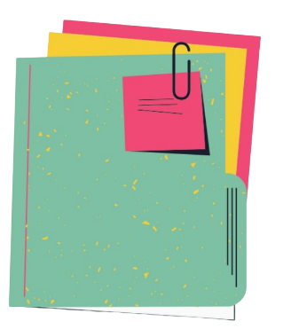
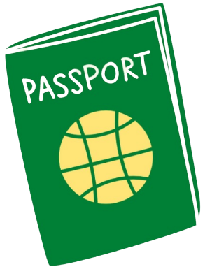
Các giấy tờ quan trọng bao gồm:
Nếu bạn học theo hướng ghi chép ra giấy thì có thể chuẩn bị một ít đồ dùng học tập như thế này để dễ dàng hơn khi mới đến đây, sau đó các bạn có thể tìm mua ở các shop nhé (giá dĩ nhiên sẽ khá cao so với Việt Nam)
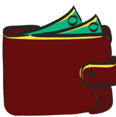
Các bạn nên mang theo người tối thiểu khoảng 1500-2000 USD hoặc 1500-2000 EUR để phòng thân, mua sắm đồ đạc ban đầu khi mới đến Hungary, cách ly, ăn uống trong khoảng thời gian đầu chưa có học bổng cả 2 bên.
Yên tâm đi! Vì sau khi có thẻ ngân hàng thì bạn đã nhận được học
bổng phía chính phủ Hungary (83 700 HUF - bao gồm cả tiền ở cho bạn
không đăng kí ở kí túc xá.
Sau khoảng 3 tháng khi bạn gửi báo
cáo đã nhập học tại Hungary thì Cục hợp tác quốc tế- Bộ giáo dục sẽ
cấp học bổng kỳ đầu cho bạn (khoảng 1 400 USD, các kỳ tiếp theo là
khoảng 2 000 USD).
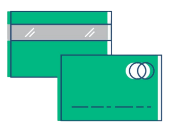
Chi phí ăn ở tại Hungary cũng khá rẻ so với các nước trong khối EU khác nên các bạn đừng quá lo lắng và không cần mang quá nhiều tiền theo người, luật giới hạn là không được mang quá 10 000 USD tiền mặt.
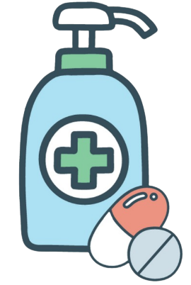
Thuốc đặc trị chỉ mua được theo đơn bác sĩ, do vậy các bạn nên chuẩn
bị trước những thuốc cần thiết trong trường hợp khẩn cấp: thuốc đau
đầu, hạ sốt, kháng sinh, đau bụng...
Khí hậu ở đây cũng khá khô nên bạn mang theo ích kem dưỡng ẩm để
tránh tình trạng khô da, bong tróc. Cuối cùng đừng quên mang
nước/gel hoặc khăn ướt sát khuẩn theo người!
Không nên mang nhiều quần áo mùa đông do đồ mùa đông ở Việt Nam mang
sang không đủ ấm, không chống được thời tiết -15 độ C đến -10 độ C
vào mùa đông ở Hungary.
Nên mang lượng quần áo vừa phải vì các bạn có thể mua quần áo hợp
thời trang hơn ở Hungary với giá không quá đắt và khá chất lượng,
đặc biệt trong những đợt sale lớn.
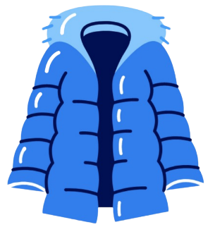
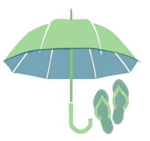
Bạn có thể mang một chiếc dù nhỏ và dép tông (vì hai món này ở Việt Nam chất lượng tốt và giá cả khá là phải chăng, mẫu mã đa dạng)
Bạn có thể mang bấm dũa móng tay, mỹ phẩm (mỹ phẩm ở đây không thiếu nhưng nếu bạn có làn da nhạy cảm và chỉ quen dùng một vài sản phẩm châu Á thì cũng nên thủ trong vali để sử dụng trong thời gian đầu).
Nên mang thêm một chiếc kính cận từ Việt Nam do cắt kính, đo kính ở đây khá đắt (khoảng 200 USD - khoảng hơn 4 triệu VND cho một chiếc kính cận loại bình thường).
Ổ cắm điện: Do tất cả các ổ điện ở đây đều là ổ cắm chân tròn, các bạn nên mang ít nhất một ổ chuyển đổi chân cắm bẹt sang đây để tránh những trường hợp mang đồ sang nhưng không dùng được.
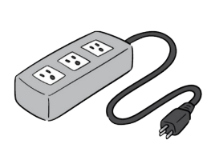
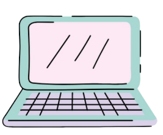
Laptop cá nhân: nên mang một chiếc và phải mang theo hành lý xách tay, các đồ dùng có pin cũng phải để trong hành lý xách tay do đây là quy định của hàng không.
Tránh mang các đồ sau chắc chắn sẽ bị tịch thu và phạt tiền tiêu hủy tại sân bay (ngoài chất cấm như ma túy hay vũ khí): Thuốc lào không được mang theo (các bạn sẽ bị phạt hơn 500 USD để tiêu hủy tại sân bay nếu mang theo), các đồ sắc nhọn không được mang theo hành lý xách tay, các sản phẩm từ thịt tươi sống, sữa tươi, các loại hạt cây tươi có thể nảy mầm....
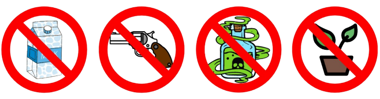